R · READING
閱讀｜讀出根據
讀文字、圖像、影片與數字，分清楚哪些是材料裡的線索，哪些是自己的推想。
W1–W18 · 每週簡報
選擇上課週次。先讀材料、留下自己的初答，再看示範與提示。
先自己判斷，回到來源找根據，再說明自己的決定。
開啟簡報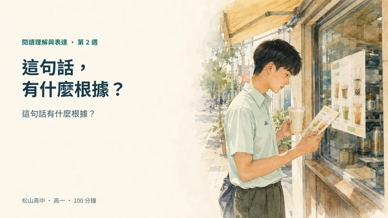
讀真實廣告，區分支持、衝突與資訊不足；再回查本人短記錄。
開啟簡報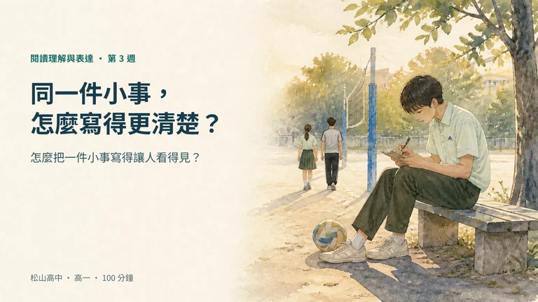
先留下記憶，再依用途選細節，說明為什麼留下它。
開啟簡報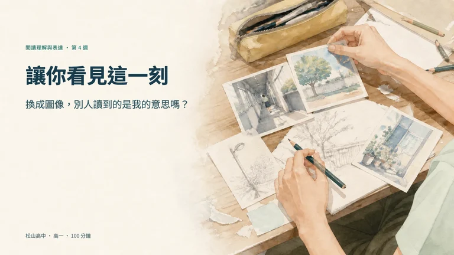
把故事做成圖卡，請真人回讀，找出原意與接收的落差。
開啟簡報接續 W4 成品，依真人回報改或留，再試看核對。
開啟簡報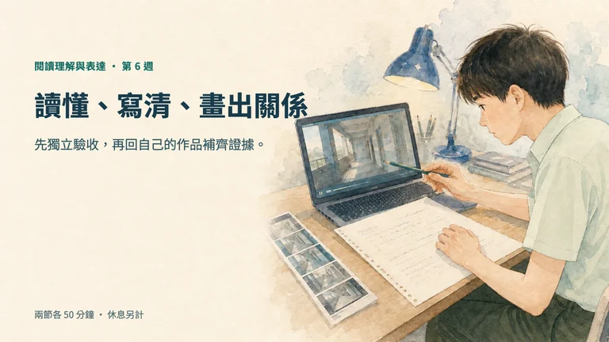
讀別組作品，逐句回查，分開作品線索與自己的推想。
開啟簡報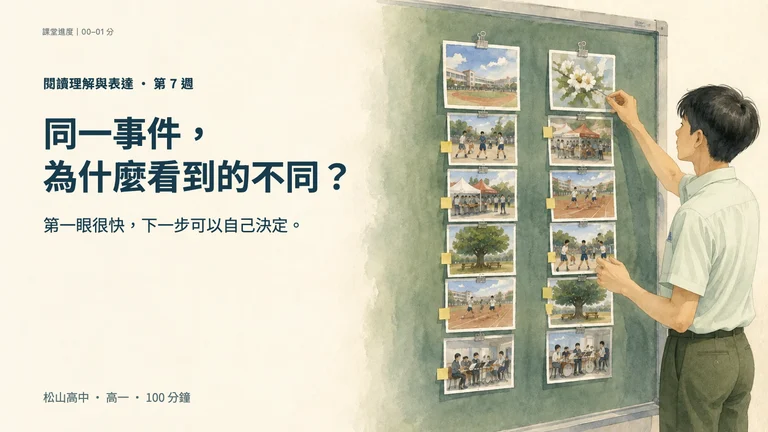
接續 W6：比較兩種寫法，改一個排序條件，說清下一步要查什麼。
開啟簡報手機管理先看示範，寧靜車廂自己判讀；用資料說明做法與界線。
開啟簡報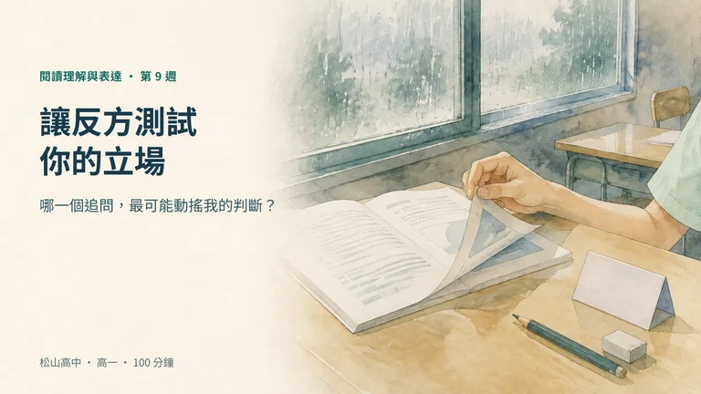
先獨立讀一篇新材料 · 再用追問檢查立場
開啟簡報先查最要緊的一句 · 開原始資料 · 再下判斷
開啟簡報先替對方把理由說完整 · 再交換回饋
開啟簡報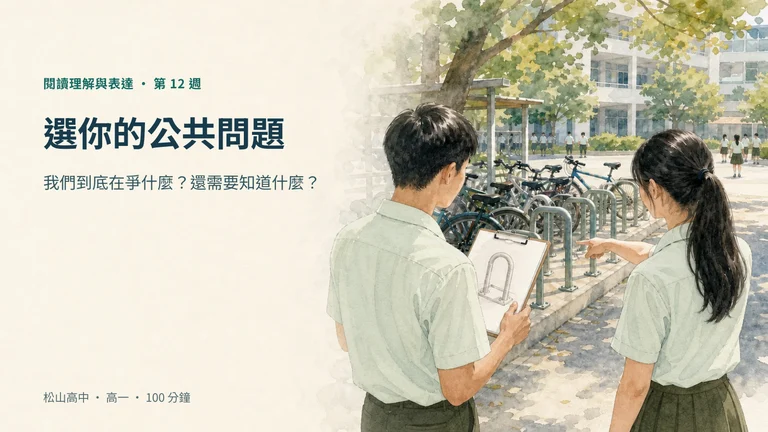
先寫自己的問題 · 選小組題 · 根據回饋再決定
開啟簡報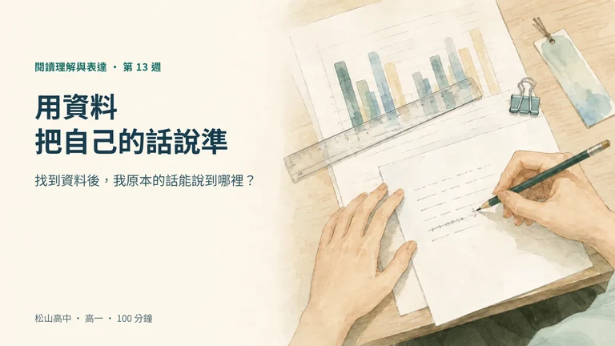
資料能說什麼、不能說什麼 · 再決定要不要改
開啟簡報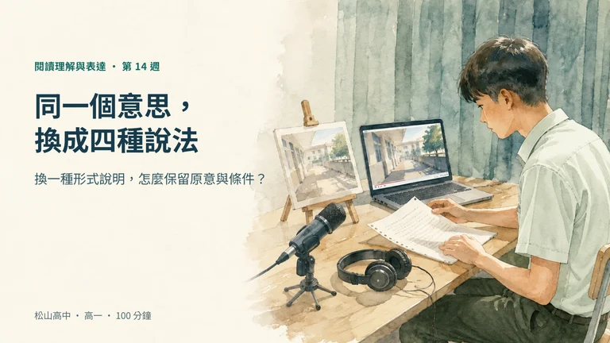
先看原始資料 · 比較圖文 · 由自己決定版本
開啟簡報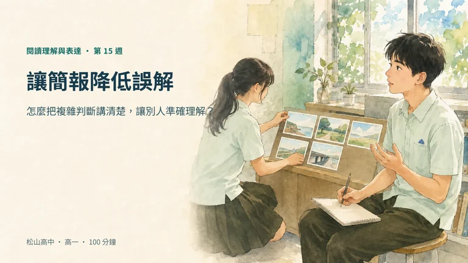
先畫五格草圖 · 請讀者說說看 · 改完再試一次
開啟簡報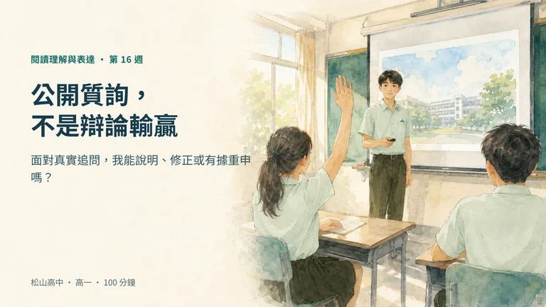
說明理由 · 回應當場追問 · 修改或保留
開啟簡報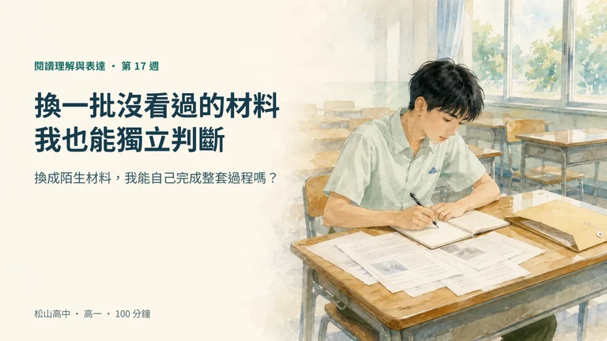
閱讀、查核、修正 · 作答後再回看 W1
開啟簡報選三件作品 · 分享願意公開的部分 · 全本發還
開啟簡報學科選做
國文、生物、化學、地科、物理、英文、數學、歷史。從熟悉的學科材料，再練一次找根據、說理由。
W1–W15 的練習放在同週完整歷程本最後；W6 同冊另有歷史選做，W16–W18 可回前週題庫。先自己解，需要時看提示，做完再回看詳解。有餘裕或課餘選做，不計分、不追交、不列缺件。
找練習與詳解關於這門課
R · READING
讀文字、圖像、影片與數字，分清楚哪些是材料裡的線索，哪些是自己的推想。
I · INTELLIGENCE
把線索連起來，看看理由和證據夠不夠。說清楚資料能支持什麼，還缺什麼。
B · BEING
用文字、口語或圖像表達。聽見讀者的回應後，自己決定修改或保留，並說明理由。